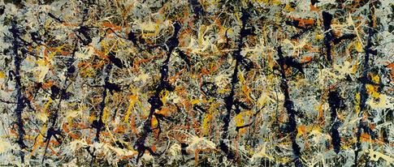

Blue Poles
Jackson Pollock · 1952 · Enamel and aluminium paint with glass on canvas · 212.1 × 488.9 cm · National Gallery of Australia, Canberra
In copyright. Look and learn: shown for study, not for download.
Fred and Florence Olsen bought the painting from Pollock for $8,000, then the highest price paid for one of his works. Ben Heller bought it in 1957, the year after Pollock's death, and the windows of his Central Park West apartment had to be removed to lower it to the street. The National Gallery of Australia paid A$1.3 million for it in 1973; the director could not authorise more than $1 million, so Prime Minister Gough Whitlam approved the purchase. Pollock first called it Number 11, 1952.